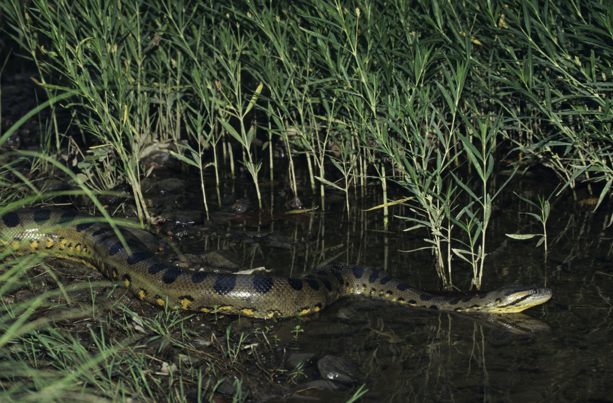

(Eunectes murinus)

La anaconda verde o común es una especie de serpiente constrictora de la familia de las boas. Es endémica de los ríos del trópico de Sudamérica. De todas las serpientes esta es la de mayor tamaño (hablando de peso); se la hace rivalizar con la pitón reticulada por el título de la serpiente más grande del mundo, que suele ser más larga, pero menos voluminosa. Se conocen casos de humanos adultos atacados, aunque ninguna serpiente tiende a atacar a un ser humano, salvo por defensa propia, ya que estos no forman parte de su cadena trófica. Las anacondas, las más fuertes y musculosas, son especialistas en asfixiar a sus presas. Las anacondas son serpientes constrictoras y las más grandes del mundo. Viven en climas cálidos y tropicales de América del Sur. Les gusta el agua y son capaces de trepar a los árboles.
Caracteristicas
- Son reptiles de caparazón duro.
- Puede medir más de un metro de longitud de la cabeza a la cola.
- Puede medir más de un metro de longitud de la cabeza a la cola.
- Se diferencia de otras especies por tener entre 4 y 5 escudos en la cabeza y 5 pares de escudos a los lados.
- Son especies migratoria.
MENU PRINCIPAL